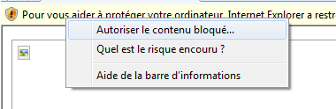

Ces enregistrememnts sont inclus pour vous aider à faire certains taches complexes dans Paratext 7.1.
SD1 Choix de la reference
SD2 Changer l'affichage
SD3 Note en bas de page
SD4 Sauvegarder le Projet
SD5 Autre Bible
VT1 Inventaire
VT2 Vérifications de base
VT3 Configurer Guillemets
VO1 Configurer l'orthographe
VO2 Vérification d'orthographe
VC1 Termes Bibliques, Setup.
VC2 Termes Bibliques, Ajouter un mot.
VC3 Termes Bibliques, Modifer un mot.
IE Imprimer ébauche
GF1 Marquer point dans l'histoire du projet
GF2 Comparer texte actuel avec des versions precedente
| (If a Yellow bar appears above your window, you must right click on the yellow bar and choose "Allow Blocked Content", then Click OK.)  |